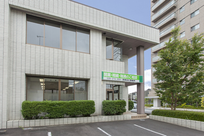
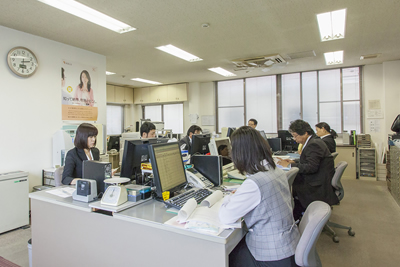
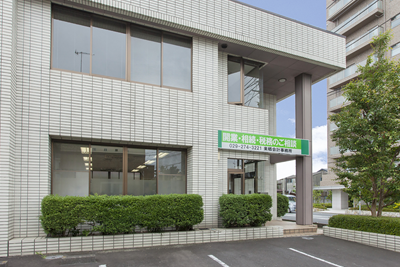
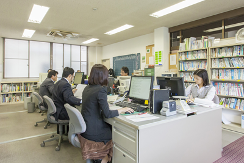

相続税の無料相談をしてみませんか
平日に休みが取れなくても、相続税申告期限が迫っていても、
下の相談日以外の日程でも、相談の時間を取らせて頂きます。
毎月、相続税の無料相談を行っています。土曜日、日曜日を中心に3回行っておりますので、相談される時間を事前に予約して頂き、ご来所ください。
無料相談に来られたとき、概算の計算にはなりますが、その場で相続税額を算出して、お知らせします。（ただし自社株評価や、評価に時間がかかるもの、そして複雑なものは除きます）
相談時に使用する資料： 固定資産課税明細書、大まかな相続財産の一覧表
また、その相続財産をもととした、当事務所の報酬額も概算でお知らせします。
相続税については、それぞれのご家族で、一つ一つのかたちが大きく異なります。そして家族内の問題ですので、微妙な問題も出てきます。そのため、ご相談につきましては、電話ではなく当事務所に来て頂き、直接のご相談となります。時間は30分〜1時間になります。なお、内容については出来るだけやさしく、難しい相続税については、ご説明いたします。
税理士 来栖 正史
（NPO法人 相続アドバイザー協議会 認定会員）
2015年の税制改正によって基礎控除額が縮小されたため、相続税を納税しなければならない人の数は今後確実に増えていきます。これまで「財産が少ないから自分には関係ない」と思っていた方でも納税義務の生じる可能性があり、生前贈与なども含めた節税対策がますます重要になってきているのです。
当相談所では「いかに負担のない相続をするか」ということに重点を置き、皆様に最大限のメリットを生み出す相続の方法を追求していきます。相続は「初めて経験する」という方がほとんどであり、悩むのは当然のこと。相談者様のお気持ちを汲み取りながら相続についてわかりやすくご説明し、最善の方法を提案できるよう努めてまいります。
所得税・法人税などに比べ、相続税は手続きが必要となる機会が極端に少ないため、税理士のなかには「相続税に関する実務経験があまりない」という人も珍しくありません。一方、税法は毎年改正されるので、日頃相続を扱っていなければスムーズに手続きを進められない場合があるのです。
相続する資産のなかでも、評価額の大部分を占めるのが土地です。土地の評価には農地法や都市計画法が影響するほか、私道などの評価も複雑に関わってきます。さらに節税を徹底するためには現地調査が欠かせないことから、土地の評価は地元に土地勘のある税理士に任せることが望ましいと言えます。
税理士選びで最も重視したいのが、節税に真正面から取り組んでくれるかどうかという点です。例えば、相続財産にかかる税率が40％の場合、財産の評価額が200万円下がるだけで支払う税金は80万円も下がります。つまり、財産評価の仕方一つで、節税できる金額が大きく変わってくるわけです。
| 事務所 | 相続税の相談所 – 来栖会計事務所 |
|---|---|
| 住所 | 〒312-0056 茨城県ひたちなか市青葉町19-23 |
| 電話 | 029-274-3221（ナビ対応電話番号） |
| アクセス | JR「勝田駅」車で南東に6分 |
| 駐車場 | 専用駐車場あり（4台分） |
| 営業時間 | 平日 9：00 〜 17：00 |
| 資格 | 税理士登録番号 関東信越税理士会 No.46780 |
青葉町の交差点を南に山田歯科、ケーキ屋さんのロンシャン、その1つ先になります。サーパスマンションが近くに2つありますが、南のサーパス青葉中央の方の道路を挟んで東側です。


相続は人生において何度も経験することではありません。それだけに、いざ自分が相続人になると何かと戸惑ってしまうものです。税理士に相談するにしても、「何をどう聞いたら良いかすらわからない…」ということもあるでしょう。当相談所ではそのような方に向け、毎月無料相談日（土・日曜日も有）を設けて個別の相談に対応。相続に関する現状の課題を整理し、今後の対応について具体的にアドバイスさせていただきます。
当相談所は長年にわたって相続税を取り扱ってきたことから、相続に関する税法に精通していることはもちろん、効果的な節税についてのノウハウも持ち合わせています。基礎控除の縮小によって節税がますます重要になってきた現在、当相談所では、もっとも負担の少ない相続の仕方をアドバイスしていきます。また、生前贈与などの事前の節税対策についてもお気軽にご相談ください。
1951年の開業以来、ひたちなか市、水戸市、那珂市、東海村といった地域からたくさんのご相談をお寄せいただき、数多くの相続に対応してまいりました。財産評価では土地評価が大きな部分を占めますが、当相談所では"地域密着相談所"としての土地勘を活かしつつ、現地調査を行うことによって最大限の節税効果を追求しています。さらに地元の不動産会社とのパイプもあることから、土地活用についてもアドバイスさせていただくことが可能です。
令和3年の7月から、認知症や亡くなった人がどういう生命保険に加入していたかを、一括して問い合わせが出来るという「生命保険契約紹介制度」が始まります。生命保険協会のホームページの照会画面から申し込む方法...
相続時精算課税は、生前に累計額2500万円までの金額を贈与税無しで、相続人に贈与する方法なのですが、これを一度使うと、同じ贈与者からは1年ごとに計算する暦年課税は使えなくなります。（ただし、相続時精算...
被相続人 とは今回お亡くなりになった方 であり、相続人 とは その被相続人の財産を相続する権利がある方です。普通は、親が亡くなれば、親の配偶者、その子供たちが相続人になります。
正式には、改製原戸籍（かいせいげんこせき）というのですが、現在の戸籍という意味と区別するために、通称「はらこせき」と呼ばれているものです。戸籍の様式が変更されると、それまで使われていた戸籍は閉じられ...
まずは、お気軽にお電話かメールでお問い合わせください。お電話の場合は、平日の9:00〜17：00にご連絡をして頂ければご対応させて頂きます。メールでのお問い合わせは、3営業日以内にご返信させて頂きます。
当相談所にお越し頂きます。そこで、相続に関わることをお聞かせいただき、お客様に合った相続税の手続きが出来る最適なアドバイスをさせて頂きます。アドバイスの内容に、ご納得して頂きましたら次のステップとなります。
打ち合わせさせて頂いた内容を基に、概算の御見積りをさせて頂きます。お客様に合った相続税のアドバイスと、御見積りの内容にご納得して頂きましたらご契約をさせて頂きます。
契約が終了しましたら、相続税申告の手続きに入ります。また、相続資料収集の同行サービスをご希望の方は、資料収集をするにあたって、最初に一日同行し主要な相続資料収集のサポートをスタートさせて頂きます。
相続税の申告期間が10ヶ月あり、それに要する期間もある程度の日数が必要となります。そのため、原則的に月に1回以上のご連絡を取り、経過状況をお知らせし、安心して頂くよう対応させて頂きます。
2025.08.04
何年かぶりに研修を受けて、「相続アドバイザー」という資格を取りました。相続税の申告については自信があるのですが、事前対策、贈与、相続人同士の分割、など多岐にわたります。今までよりは、相続に対して幅広い目で対応していけるかなと思っています。
2025.07.02
相続の放棄をするのには、相続を知った日から3カ月以内に裁判所で、放棄の手続きをします。遺産分割をするときに遺産を取得しなくても、それは放棄にならず、単に受取らなかったというだけで、放棄にはなりません。被相続人の持つ負債が財産より多い場合、放棄の手続きをしないでおくと、負債の方も継承してしまいますので、注意が必要です。
2025.02.28
2024年（令和6年）3月1日、最寄りの市区町村役場において、ほかの市区町村役場の戸籍謄本であっても、一括して取得することができる制度が始まりました。戸籍を管轄する法務省の戸籍情報連携システムを利用した仕組みで、これを「広域交付制度」と言います。
贈与には大きく分けて「暦年贈与」と「相続時精算課税」の2つがあります。
暦年贈与は、毎年1月から12月までに贈与された財産に対して課税され、贈与された者が翌年3月15日までに贈与税を支払います。なお、基礎控除と言って1年110万円までの贈与であれば、贈与税はかかりません。なお、令和6年1月1日の贈与から、相続前3年分から7年分の贈与について加算されるように変わっています。
相続時精算課税は、一度これを使うと毎年の暦年課税は使えなくなりますが、早い段階で財産を相続人に移しておきたいといった場合、この課税方式を使って名義を移すことが出来ます。18歳以上の子や孫が60歳以上の父母又は祖父母から財産の贈与を受けたときに、2500万円までの贈与は贈与税をかけずに（2500万円を超えた金額は20％の贈与税）、相続時にその贈与した分の金額を相続財産に加算し、相続税を計算するというものです。
また、この他にも贈与には、父母又は祖父母から住宅取得のための資金贈与や、教育資金贈与、結婚・子育て資金贈与などがあります。
相続又は遺贈により被相続人（死亡した人のこと）から財産を取得した人の課税価格の合計が基礎控除額を超える場合には、原則的にその財産の取得者は課税されると考えられますので、申告手続きを進めていく必要があります。
基礎控除額＝3,000万円＋600万円×法定相続人の数
代表的なものに土地・建物などの不動産、株式、出資金、社債、投資信託などの有価証券、現金、預貯金など、家庭用財産、個人で事業を行っているときにはその事業用財産、生命保険金、死亡退職金等のいわゆるみなし相続財産、その他書画、骨董など、最近では海外の所有不動産などがあげられます。
相続開始の日（相続人が被相続人の死亡を知った日）の翌日から10ヶ月以内です。
生前対策については、下のようなものがあげられます。


相談する税理士によって、節税は変わります。
税理士が相続に詳しいかどうかを判定する一つの方法は、相続税法の最新の改正内容を自分である程度調べておき、そのことについて税理士に質問してみることです。コンスタントに相続を取り扱っている税理士であれば、税法の変更点は押さえているはずなのでスムーズに答えてくれるでしょう。